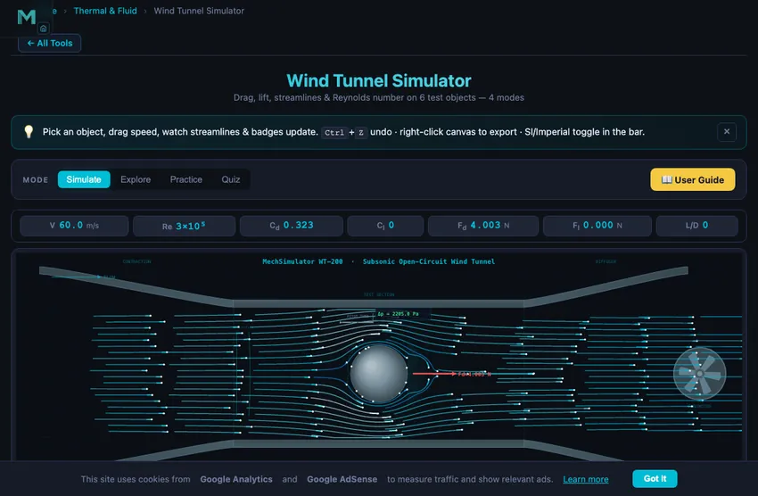

Wind Tunnel Simulator
3D Model — Wind Tunnel Simulator
Free online aerodynamics simulator and virtual wind tunnel. Solve real airflow around any NACA 4-digit airfoil or bluff body, with drag, lift, Reynolds and Mach, aspect-ratio induced drag, blockage corrections and ISO 5168 uncertainty. Live Cp, polar and lift-curve graphs + PDF test report.
Drag, lift, streamlines & Reynolds number on 7 test objects — 4 modes
Display Controls
🔬 Lab Setup Air, 15.0 °C, sea level · 2-D section
Tunnel conditions working fluid: air
Enter the full-scale Reynolds number your model must reproduce — the tool solves V = Re·μ/(ρD) for the tunnel speed.
Wing geometry NACA 0012
Test section & blockage
Instrument uncertainty standard, k = 1
CSV sweep
The CSV carries the full test conditions in its header, so a lab report can cite exactly what was run.
Σ Live equations — values substituted from current state
💡 What-if coach — insights from current values
⚖ Object comparison — how the 7 shapes stack up
| # | Question | Result |
|---|
1 Overview
The Wind Tunnel Simulator is an interactive virtual aerodynamics laboratory where you can test seven different objects in a controlled airflow. A real wind tunnel produces uniform airflow over test models to measure drag force, lift force, and pressure distribution. This simulator reproduces those measurements while visualizing streamlines, flow separation, wake regions, and boundary layer behavior in real time.
Seven test objects are available: sphere, cylinder, cone, flat plate, streamlined body, NACA 0012 airfoil, and a car-like bluff body. Each exhibits different aerodynamic characteristics that you can explore by adjusting air speed (1–150 m/s), object size, and angle of attack (for the airfoil). The simulator calculates drag coefficient, lift coefficient, Reynolds number, dynamic pressure, drag force, lift force, and lift-to-drag ratio for every configuration.
2 Configuring the System
The simulator opens in Simulate mode with dual canvases: the wind tunnel visualization on the left and pressure/force graphs on the right. Graph badges display air speed, Reynolds number, drag coefficient, and drag force. The control panel below lets you choose the test object, select the visualization mode (streamlines, pressure, or vectors), adjust air speed, object size, and angle of attack, and toggle overlays such as the equation, force arrows, pitot tube, boundary layer, labels, and background grid.
To begin: (1) Select a test object from the tabs. (2) Choose a visualization style. (3) Drag the air speed slider or type a value into the stepper. (4) Watch streamlines deform around the object and how the readout values change. (5) For the airfoil, adjust the angle of attack to see how lift and drag change — the canvas shows the α arc between the chord line and the flow direction, the quarter-chord (c/4) aerodynamic centre, and a red STALL flag when you exceed the stall angle. The stall angle is Reynolds-number dependent: roughly 10° at Re ≈ 10⁵, rising to about 16° at Re ≈ 10⁷, so larger or faster models stall later. The readout grid shows all eight aerodynamic parameters simultaneously.
3 Simulate Mode & Canvas Overlays
The left canvas renders animated streamlines flowing past the selected object. The flow visualization reveals laminar and turbulent regions, flow separation points, wake vortices, and stagnation zones. The right canvas has five graph tabs: Cp pressure distribution, Forces bar chart, boundary-layer Profile, drag Polar, and the Cl–α lift curve — the canonical angle-of-attack plot showing the linear lift region, the roundover to Cl,max, the Reynolds-dependent stall angle marker, and your current operating point as a live dot.
Six overlay checkboxes let you focus on a single concept: Equation shows the on-canvas drag equation, Force arrows draws the Fd/Fl vectors, Pitot tube shows the upstream sensor, Boundary layer renders the developing BL on the test object, Labels shows tunnel zone titles, and Grid displays a background measuring grid (also toggled via right-click).
4 Presets, Steppers & SI / Imperial Units
Each control comes as a slider plus a stepper (− / typed value / +) so you can pick approximate values quickly with the slider and dial in exact values numerically. Use the SI / Imperial toggle in the controls bar to flip every display between metric (m/s, mm, N, Pa) and imperial (mph, in, lbf, psi); internal calculations always stay in SI for accuracy.
Presets snap to canonical configurations: Sphere @ 30 m/s, Drag crisis Re ≈ 3×10⁵, NACA best L/D 5°, Airfoil pre-stall 10°, Airfoil stall 18°, Car at 30 m/s, and Streamlined body. Loading a preset is undoable via Ctrl+Z.
5 Show Calculations, Learning Panels & Sounds
Tap Show Calculations (calculator icon, bottom-right of the graph canvas) to open a step-by-step LaTeX derivation of dynamic pressure, Reynolds number, drag force, lift force, and L/D ratio for the current state — rebuilt every time you open it. The Learning panels below the readout cards collapse independently and contain Live Equations (KaTeX), a What-if Coach with state-driven insights, and an Object Comparison table.
Subtle whoosh and stall sounds play when the airspeed jumps significantly or the airfoil exceeds its Reynolds-dependent stall angle (Web Audio API, no external files).
6 Action Bar, Export & Right-Click Menu
The action bar holds Undo / Redo, CSV export, PNG export, and Reset. CSV export runs a parametric sweep over whichever variable you pick in Lab Setup — air speed, angle of attack, model size, Reynolds number or aspect ratio — and writes V, α, D, AR, Re, Mach, Cd (split into profile and induced), Cl, S, Fd, Fl, q, L/D, blockage ε and the expanded uncertainty U(Cd), with the full test conditions in the header, in your active unit system — perfect for plotting in Excel or Python. PNG export downloads the wind tunnel canvas with a watermark.
Right-click anywhere on the wind tunnel or graph canvas to get Copy Value, Export PNG, Export CSV, Toggle Grid, and Reset. Clicking outside the menu dismisses it.
7 Keyboard Shortcuts
- 1–4 — jump to Simulate / Explore / Practice / Quiz modes.
- Ctrl+Z — Undo. Ctrl+Shift+Z — Redo.
- Esc — close the calculation modal or the right-click context menu.
- Slider focus + arrow keys — fine-tune values one step at a time.
8 Tips & Best Practices
- Start with the sphere to understand the basics of drag, then compare it to the cylinder and flat plate to see how shape affects Cd.
- Use the airfoil at low angles of attack (0–8°) to observe smooth lift generation, then push past the on-canvas αstall readout to witness stall — and note how raising speed or chord (higher Re) delays it.
- Pay attention to the Reynolds number: the same object can have very different drag characteristics at different Re values.
- The streamline visualization is best for understanding flow patterns; switch to pressure view to see the pressure distribution responsible for lift and drag.
- The L/D ratio is the key efficiency metric for aircraft: higher L/D means the wing generates more lift per unit of drag.
- In Practice mode, always identify which formula to use before calculating. Most problems use Fd = ½ρV²ACd or Re = ρVD/μ.
- Compare the same object at low speed (laminar) vs. high speed (turbulent) to see how boundary layer transition affects aerodynamic forces.
What is a Wind Tunnel Simulator?

A wind tunnel simulator is an interactive virtual lab that measures drag force, lift force, pressure distribution, and Reynolds number on a test object placed in a controlled airflow. This free online wind tunnel animates real streamlines, boundary layers, vortex shedding, and wake recirculation across seven test shapes — no signup required.
Using it as an aerodynamics simulator
A wind tunnel is the apparatus; aerodynamics is what you measure with it. Everything this aerodynamics simulator reports is a standard aerodynamic quantity — drag coefficient Cd, lift coefficient Cl, lift-to-drag ratio, Reynolds number, Mach number, dynamic pressure and the pressure coefficient Cp around the body — computed live as you change the shape, the speed or the air.
Three things separate it from a drag-coefficient lookup. The airflow itself is solved, not drawn: a Hess–Smith panel method computes the potential flow around the exact body you configured, so the streamlines are a real solution rather than an illustration. The aerodynamic forces are traceable — integrating the plotted Cp returns the same drag the force panel shows, so you can check the result by hand. And the test conditions are real variables: altitude, temperature, model scale and aspect ratio all move the answer the way they move it in a real tunnel.
That makes it usable for the aerodynamic work a course actually sets — comparing bluff and streamlined bodies, finding the stall angle of a cambered aerofoil, matching a model’s Reynolds number to full scale, or producing a drag polar with a stated uncertainty.
How does an online wind tunnel work?
The simulator solves an incompressible potential-flow model with a shape-aware doublet for body blockage, a Kutta–Joukowski bound vortex for lift, and counter-rotating wake eddies for recirculation. Animated particle streaklines reveal flow separation, attached vs detached boundary layers, von Kármán vortex streets, and the drag crisis at Re ≈ 3×10⁵. Every coefficient (Cd, Cl, L/D), force, and dynamic pressure updates in real time as you drag a slider.
Which test objects are available?
The simulator includes seven classic aerodynamic shapes — sphere, circular cylinder, cone, flat plate, streamlined teardrop, a NACA 4-digit airfoil you configure yourself (camber, camber position and thickness — 0012, 2412, 4415 and the rest of the family), and a car (sedan profile). Each has Cd values that match published wind tunnel data, plus realistic flow separation and wake patterns. The Flip toggle reverses asymmetric shapes (cone, teardrop, airfoil, car) so you can compare front-first vs rear-first drag — the cone's drag jumps 2.8× when flipped base-first, and a sedan's Cd grows 45 % rear-first.
Drag coefficient by shape — quick reference table
| Object | Typical Cd | Flipped Cd | Re range | Notes |
|---|---|---|---|---|
| Sphere (smooth) | 0.47 | — | 10³ – 3×10⁵ | Drops to ~0.20 above the drag crisis |
| Cylinder (crossflow) | 1.17 | — | 10³ – 2×10⁵ | Von Kármán vortex street; crisis near 2.5×10⁵ |
| Cone (apex-first) | 0.50 | 1.40 (×2.8) | 10³ – 1×10⁶ | Apex slices the flow; flipped base is bluff |
| Flat plate (normal) | 1.98 | — | any | Hoerner reference; large wake |
| Streamlined body | 0.04 | 0.14 (×3.5) | 10⁴ – 10⁶ | Attached flow forward; flipped tip stalls |
| NACA 0012 airfoil | 0.008 – 0.02 | (Cl sign flips) | 10⁵ – 10⁷ | Stalls at α ≈ 10–16° (rises with Re); L/D max ≈ 15–20 (AR-6 wing) |
| Car (modern sedan) | 0.28 – 0.35 | 0.51 (×1.45) | 10⁵ – 10⁶ | Hood faces wind; reversed rear is much bluffer |
Reference-area conventions (shown step-by-step in the Show Calculations modal): the cylinder, flat plate and car are treated as 2-D sections of span b = D, so their Cd values are the two-dimensional ones (e.g. 1.98 for the infinite normal plate, 1.17 for the long cylinder); the sphere and cone are axisymmetric with frontal area πD²/4; the teardrop is a body of revolution (frontal area πt²/4 with t ≈ 0.28 L); and the wing uses the standard planform area S = c·b = AR·c² for the aspect ratio you set, defaulting to a two-dimensional section spanning the tunnel. Blockage is computed from the true frontal area instead, which for a wing is t·c·b — not the same thing as its reference area.
What formulas does the simulator use?
Drag force is Fd = ½ρV²ACd and lift is Fl = ½ρV²ACl. The Reynolds number Re = ρVD/μ sets the flow regime — laminar below Re ≈ 10⁵, turbulent above 10⁶. Dynamic pressure q = ½ρV² is measured live by the on-canvas pitot tube. For airfoils, thin-airfoil theory gives Cl = 2π·sin(α) up to the stall angle (10–16° for NACA 0012, rising with Reynolds number), beyond which Cl drops sharply and Cd spikes — the simulator's polar plot draws the canonical (L/D)max tangent from the origin so you can read peak efficiency at a glance.
What is the drag crisis and how do I see it?
The drag crisis is a sudden drop in drag coefficient when the boundary layer transitions from laminar to turbulent near Re = 3×10⁵. For a sphere, Cd collapses from 0.47 to ~0.20 because the turbulent BL delays separation and shrinks the wake. To watch it happen, select the sphere, leave the size at 75 mm, and slide the air-speed slider through 50–110 m/s — the live Cd readout drops as Re crosses the critical value. This is why golf balls have dimples: they trip the BL turbulent below the natural critical Re.
Airfoil aerodynamics and stall
A symmetric section such as the NACA 0012 generates lift proportional to angle of attack in the linear region (Cl ≈ 0.11/deg as a 2-D section, falling to about 0.080/deg on an AR-6 wing). Add camber with the NACA 4-digit generator and the whole curve shifts left by the zero-lift angle, so the section already makes lift at α = 0. Beyond the critical angle — which the simulator computes from the Reynolds number, roughly 10° at Re 10⁵ rising to 16° at Re 10⁷, matching the classic Jacobs & Sherman NACA variable-density-tunnel data — the upper-surface boundary layer separates and lift collapses while drag triples: this is stall, a critical flight-safety concept. The new Cl–α lift-curve tab plots the full lift curve with the stall angle, Cl,max, and your live operating point, and the canvas overlays the α arc, quarter-chord aerodynamic centre, and a STALL warning flag. Open the Polar tab to read (L/D)max: the tangent from the origin touches the polar near α ≈ 4–5° with L/D ≈ 15–20, rising with Reynolds number. Note the model represents a finite square-planform wing of aspect ratio 6 (Oswald e = 0.9), so induced drag is included — a pure 2-D section would show far higher L/D (see Anderson, Fundamentals of Aerodynamics).
Build any NACA 4-digit airfoil — camber, thickness and the zero-lift angle
The airfoil is no longer a fixed section. The NACA 4-digit generator in Lab Setup builds the geometry live from the three digits of the designation: m (maximum camber, in per cent of chord), p (where that camber peaks, in tenths of chord) and t (maximum thickness, per cent of chord). Move a slider and the drawn section, the pressure distribution and the forces all change together, because the same generator feeds all three.
The point of camber is easiest to see at zero angle of attack. A symmetric NACA 0012 makes exactly zero lift there. Dial in 2 % camber to get a NACA 2412 and the lift coefficient jumps to about 0.23 with the wing still sitting flat — because camber has moved the zero-lift angle α0 to −2.08°. That number is not a fitted constant; the tool computes it from thin-airfoil theory by integrating the mean camber line,
α0 = −(1/π) ∫0π (dz/dx)(cos θ − 1) dθ, with x = (1 − cos θ)/2
and it reproduces the textbook values across the family: −2.08° for the 2412, −4.15° for the 4412, −6.23° for the 6409. The same integral gives the quarter-chord pitching moment Cm,c/4 = (π/4)(A2 − A1), which comes out at −0.053 for the 2412 — the nose-down moment every cambered wing has to trim against. Thickness does not appear in either result, which is exactly what thin-airfoil theory predicts: change the 2412 to a 2415 and α0 and Cm,c/4 do not move at all.
Aspect ratio and induced drag — why long wings win
A wing is not a section. Set the aspect ratio in Lab Setup and the simulator switches from a two-dimensional section to a finite wing using Prandtl lifting-line theory. Two things happen at once, and both are visible in the readouts. The lift-curve slope falls from the 2-D value of 2π per radian (0.1097 per degree) to
a = a0 / (1 + a0/(π e AR))
and a second drag term appears — induced drag, Cdi = Cl²/(π e AR), the price of making lift with a wing of finite span. The Drag Coefficient card splits into profile and induced parts so you can watch the trade directly. Hold a cambered section at 6° and sweep the aspect ratio: L/D runs from about 66 at AR = ∞ down to roughly 25 at AR 12, 17 at AR 6 and 9 at AR 2. That single sweep is the whole reason a glider has long thin wings and a fighter does not.
Because the reference area is the planform S = AR·c² rather than the frontal area, the wing is treated consistently everywhere: the same S is used for the coefficients, the forces, the calculation modal and the report. Tunnel blockage, by contrast, uses the true frontal area t·c·b, because that is what physically obstructs the test section.
Reynolds matching — testing a scale model properly
Dynamic similarity is the reason wind tunnels work at all: a small model reproduces full-scale behaviour when the Reynolds number matches, not when the speed matches. To make that testable, the tunnel conditions are now real variables. Set the temperature and the altitude — the tool builds the International Standard Atmosphere for that altitude, gets density from the ideal-gas law and viscosity from Sutherland’s law, so ρ, μ, ν and the speed of sound all follow the conditions you set instead of being frozen at sea level.
Type a target Reynolds number into Match Re and the tool solves V = Re·μ/(ρD) for the tunnel speed you need. When the answer falls outside the tunnel’s range, that is the lesson rather than an error. Take a car 1.8 m wide at 27.8 m/s: Re = 3.42×10⁶. On a 1:10 model that needs 278 m/s — Mach 0.82, so the incompressible model the tunnel uses is no longer valid. Raising the speed is the first lever to fail.
The second lever is cooling the air, which is the principle behind cryogenic tunnels such as NASA’s National Transonic Facility. Chilling from 15 °C to −60 °C raises density to 1.656 kg/m³ and drops viscosity to 1.40×10⁻⁵ Pa·s at the same time, so kinematic viscosity falls by a factor of 1.73 and the required speed drops to 161 m/s. Better — but still Mach 0.55. Raising the ambient pressure works the same way through density.
The lever that actually solves it is model size. Reynolds number scales linearly with the characteristic length, so the speed you need scales as 1/D. Go to a 1:2 model and the requirement falls to 56 m/s — Mach 0.16, comfortably incompressible. That is precisely why serious automotive and aerospace testing is done in large or full-scale tunnels rather than on small models, and why the three Lab Setup levers are worth playing with side by side.
Altitude produces the other classic result. Hold the speed at 60 m/s and climb to 11 km: density falls from 1.225 to 0.364 kg/m³, Reynolds number drops by roughly two-thirds — and the Mach number rises, from 0.176 to 0.203, because the speed of sound falls with temperature. Mach is now shown live and flagged amber above M = 0.3, the point where the incompressible model stops being safe.
Tunnel blockage — why your model has to be small
A model in a closed test section makes the air around it speed up, because the walls will not let the flow move aside. The measured dynamic pressure is therefore too low and the coefficients come out too high. The simulator now models this the way a real lab does, following Barlow, Rae & Pope: solid blockage εsb = K1τ1Vmodel/C3/2 from the model’s volume, plus wake blockage εwb = (Sf/4C)·Cd from its wake. The corrected values follow as Vc = V(1+ε), qc = q(1+ε)² and Cd,c = Cd/(1+ε)² — the measured force never changes, only the coefficient you report from it.
Set the test section to 300 × 300 mm and grow a sphere inside it. At 50 mm the blockage ratio is 2.2 % and the correction is under 1 %. At 150 mm the ratio hits 19.6 % and the correction reaches 10.7 %, and the tool warns that first-order corrections are no longer trustworthy. The conventional limit is 5 %, and now you can see why it exists.
Measurement uncertainty — the number every lab report needs
A result without an uncertainty is not a measurement. Enter your instrument tolerances — pitot, calipers, force balance, thermometer, barometer — and the tool propagates them through the whole chain the way GUM and ISO 5168 require, adding relative uncertainties in quadrature:
(uCd/Cd)² = (uF/F)² + (uq/q)² + (uS/S)², (uq/q)² = (uρ/ρ)² + (2uV/V)²
The factor of 2 on velocity is the thing students remember: because q depends on V², a 1 % error in speed becomes a 2 % error in dynamic pressure, and dynamic pressure is usually the dominant term. Area carries a factor of 2 as well, since S scales with D². The tool reports the expanded uncertainty U = 2uc at roughly 95 % confidence, names the dominant contributor, and carries the whole budget into the PDF report.
Integrating Cp — the classic pressure-tap exercise
The pressure plot is no longer decorative. The separated-flow base pressure is solved so that integrating the plotted curve reproduces the pressure part of the reference drag coefficient — so the number you get by integrating by hand is the number the force panel shows. For a cylinder that means
Cd = ∫0π Cp cos θ dθ (2-D), Cd = 2∫0π Cp sin θ cos θ dθ (sphere)
and the calibration lands the base pressure at Cp ≈ −0.90 for a subcritical cylinder, right inside the measured range — the check that the curve is physical and not merely fitted. The dashed inviscid curve integrates to zero, which is d’Alembert’s paradox shown rather than asserted: perfect attached potential flow predicts no drag at all, and the entire measured drag of a bluff body comes from the separation the dashed curve refuses to have. For the airfoil the same machinery integrates the chordwise Cp difference to the normal-force coefficient and returns the plotted Cl.
What features does this virtual wind tunnel include?
Beyond the simulation engine, the tool ships a full aerospace-lab workflow: 5 graph tabs (Cp distribution with live pressure-drag integration, force bars, boundary-layer profile, drag polar, and the Cl–α lift curve), a Lab Setup panel (working fluid, temperature, altitude, NACA 4-digit geometry, aspect ratio, test-section size and blockage correction, and instrument uncertainties), a step-by-step calculation modal with KaTeX-rendered equations, an industrial-standard test report exportable as PDF (AIAA S-114 / ISO 5168 / AGARD AR-304), SI/Imperial unit toggle, presets for the ten most-pedagogical configurations, a parametric CSV sweep over speed, angle of attack, size, Reynolds number or aspect ratio with the full test conditions in its header, play/pause to freeze a vortex moment, zoom (1.4×–3.0×, auto-scaled to object size) for close inspection, CSV sweep export, PNG snapshot, undo/redo, and a live pitot-tube Δp readout.
Why Aerospace Started With Wind Tunnels and Why CFD Has Not Replaced Them
The Wright Brothers built a wind tunnel before they built an aeroplane that flew. By 1901 they had tested over 200 airfoil shapes — correcting Lilienthal’s tabulated coefficients that they had discovered were wildly wrong by comparison with their tunnel data. Today, every commercial aircraft, every Formula 1 car, every Olympic bobsled has spent thousands of hours in wind tunnels before being released.
Computational fluid dynamics gets better every year but still cannot replace tunnels entirely. CFD is excellent for clean attached flow at moderate Reynolds. It struggles with separation, transition, turbulent boundary layers, three-dimensional effects, and unsteady phenomena like flutter. Modern aircraft programmes use CFD for initial design exploration (hundreds of configurations cheaply) then validate the final candidate in a tunnel (which costs millions per test campaign).
The Drag Crisis — Why Golf Balls Have Dimples
Set the simulator to a smooth sphere and ramp up wind speed. Drag coefficient sits around 0.5 at low Reynolds. Then somewhere between Re = 200,000 and 500,000 it suddenly drops to about 0.2. This is the drag crisis: turbulence in the boundary layer increases skin friction slightly but delays separation dramatically, narrowing the wake and cutting pressure drag.
Golf balls exploit this. Dimples force boundary-layer transition early, putting the ball permanently in the post-crisis regime. Same speed, twice the range of a smooth ball. Cricket bowlers use the opposite trick — the shiny side of the new ball stays laminar while the rough side becomes turbulent, producing the swing every fast bowler depends on. Engineers exploit similar effects in compressor blading, vortex generators on aircraft wings, and turbulator strips on glider wings.
Wind Tunnel References
- Anderson, J. D. — Fundamentals of Aerodynamics, 6th ed. The standard undergraduate aerodynamics text.
- Barlow, Rae & Pope — Low-Speed Wind Tunnel Testing, 3rd ed. The reference for tunnel design and measurement technique.
- NACA Report 824 — Summary of Airfoil Data. The foundational airfoil performance tabulation still cited today.
Explore related simulators
If you found this wind tunnel simulator useful, dive deeper into fluid mechanics with the Bernoulli's Principle simulator, Fluid Flow simulator, Pascal's Law simulator, and Projectile Motion simulator — each comes with the same step-by-step calculation modal, SI/Imperial toggle, and test-report export.